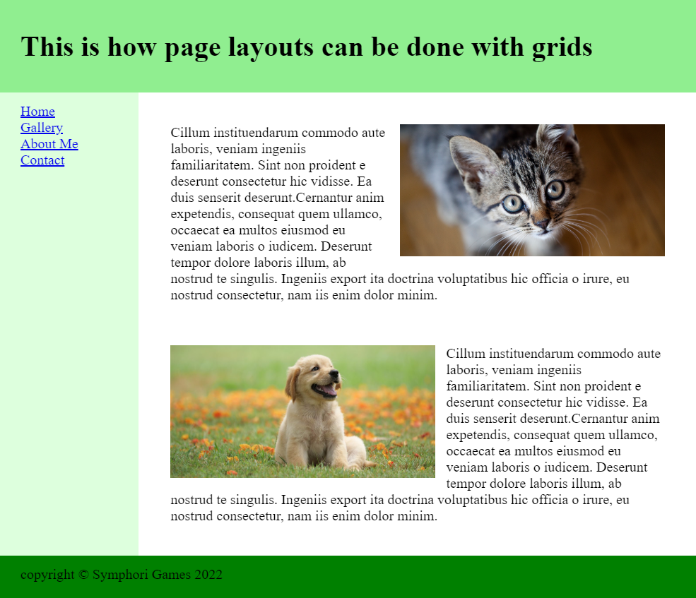

This assignment is going to be a bit more free-form than our more recent ones. The objective is to show that you understand how to use CSS grids, and to show off your design skills.
If you need a refresher on how to use Grids, take a look at the examples here and here.
Instructions
Create a new file called Assignment13.html in your /assignments folder in your Portfolio repository. Complete the following requirements:
An example of the bare minimum end result can be seen in the following image (try to do more than the bare minimum though; this is your time to show off!)

Submission Instructions
Submit the URL to your new Assignment13.html webpage.